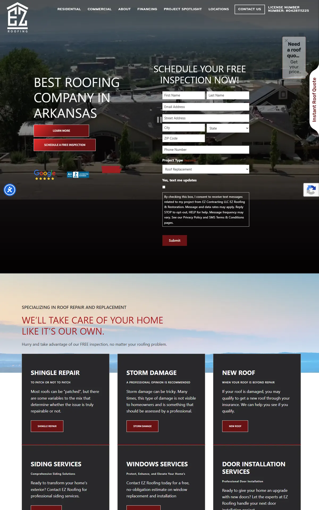
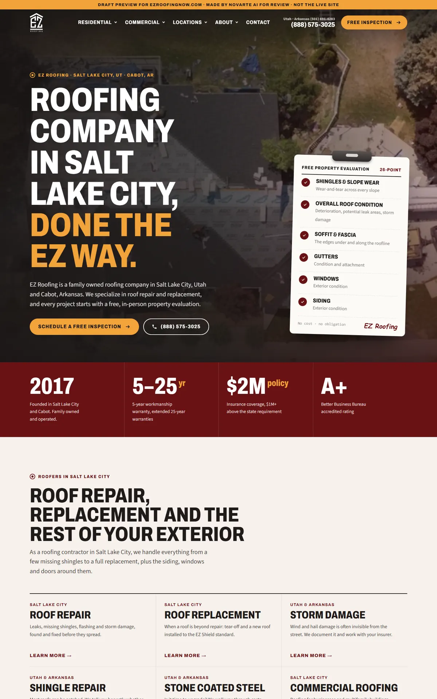
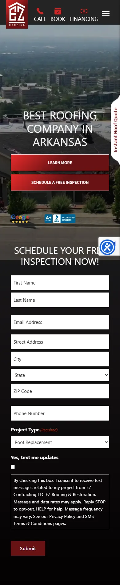
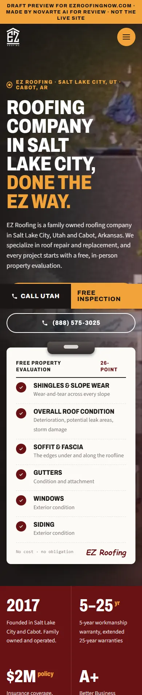

Start with the report to see what was wrong, then what we fixed, then the before-and-after. When you're ready, open the new website. Nothing here is live.
The website plan report from the 5 Oct 2026 audit. It's the reason behind most of the changes below.
EZ Roofing Utah · Salt Lake City · Prepared 17 Oct 2026. Business facts and audit from 5 Oct 2026; search numbers and Google results from 14 Oct 2026. Draft for Angelo's review.
roofing company salt lake city (170 searches, plus 210 for "roofing company near me"). Same page also covers "roofers salt lake city" and "roofing contractor salt lake city".Name: the client list row says "Z Roofing Utah", but the Google profile says "EZ Roofing Utah". This report uses the Google name. The list row probably lost its "E".
Phone: the Google profile shows a toll-free number (+1888-575-3025), copied exactly as given. Ask the client if they also have a local 801 number. The site and the Google profile must show the same number.
From the Google profile on 5 Oct 2026. Confirm with the client before it goes on the site.
roofing company salt lake cityroofers salt lake city, roofing contractor salt lake cityThe home page should link to every service page, the cost page and the reviews page. Show the 4.7-star rating from 51 reviews once the client confirms it.
| # | Service | Target keyword | Searches SLC | "Near me" SLC | Exact keyword | Status |
|---|---|---|---|---|---|---|
| 1 | Roof repair | roof repair salt lake city | 320 | 110 | 140 | Has a page |
| 2 | Metal roofing | metal roofing salt lake city | 170 | 10 | 40 | Has a page |
| 3 | Roof installation | roof installation salt lake city | 70 | 110 | 10 | Has a page |
| 4 | Roof replacement | roof replacement salt lake city | 50 | 70 | 20 | Has a page |
| 5 | Roof inspection | roof inspection salt lake city | 70 | 10 | 10 | Has a page |
| 6 | Pre cast concrete | pre cast concrete salt lake city | 50 | 10 | – | Check with Angelo |
| 7 | Commercial roofing | commercial roofing salt lake city | 20 | 10 | 10 | Has a page |
| 8 | Flat roof repair | flat roof repair salt lake city | 10 | 10 | 10 | Has a page |
| 9 | Commercial roof | commercial roof salt lake city | 20 | – | 10 | Merge with #7 |
| 10 | Roofing reviews | roofing reviews salt lake city | 10 | 10 | 10 | Not a service |
"Exact keyword" = searches for the keyword with the city name, across Utah (for services read from their site: inside Salt Lake City). "–" = fewer than 10 a month; "10" is Google's lowest number. One page per service.
commercial roofing salt lake city, with the other redirected to it. Angelo decides.| Search | Use? | Where |
|---|---|---|
| Residential roof repair salt lake city | Yes | Roof repair page (section on homes) |
| Best roof repair salt lake city | Show, don't claim | Roof repair: reviews, photos, process. Don't call them "the best". |
| Affordable roof repair salt lake city | If true | Only with real prices or financing from the client |
| Cheap roof replacement salt lake city | If true | Cost page: ways to save, only real offers |
| Best roof replacement salt lake city | Show, don't claim | Roof replacement page |
| Roof replacement salt lake city cost | Yes | Cost page |
| Mobile home roof replacement salt lake city | Ask client | Section on replacement page if they do it |
| Mobile roof replacement salt lake city | Ask client | Same as above (likely means mobile home) |
| Park City Roofing | Skip | Another company's name |
| On the Top Roofing | Skip | Another company's name |
| Keyword | Searches SLC | All Utah | City version | All Utah |
|---|---|---|---|---|
| roof replacement cost | 30 | 170 | roof replacement cost salt lake city | – |
| roof repair cost | 10 | 30 | roof repair cost salt lake city | – |
| new roof cost | 20 | 70 | new roof cost salt lake city | – |
| metal roof cost | 20 | 90 | metal roof cost salt lake city | – |
One cost page covering all four. With 246 pages, check first whether a cost page already exists; if so, improve it instead of adding a new one. Cost searchers are close to buying. Use only real prices from the client. If the client will not share prices, explain what changes the price (roof size, material, tear-off, pitch) and invite a free estimate instead.
| City | Keyword 1 | All Utah | Keyword 2 | All Utah |
|---|---|---|---|---|
| South Jordan | roof repair south jordan | 30 | roof replacement south jordan | – |
| Sandy | roof repair sandy | 30 | roof replacement sandy | – |
| Draper | roof repair draper | 10 | roof replacement draper | – |
Build a city page only if the business really works there. Check first whether these cities already have pages among the 246. Each needs real local content, not the Salt Lake City page with the name swapped.
| Keyword | Avg. words (top 3) | Have FAQ | Show prices |
|---|---|---|---|
| roof repair salt lake city | ~1,654 | 2 of 3 | 0 of 3 |
| roof replacement salt lake city | ~1,841 | 3 of 3 | 0 of 3 |
| roof replacement cost salt lake city | ~1,728 | 2 of 3 | 2 of 3 |
Use competitor headings for topic ideas only. Do not copy them. One top result for roof repair is a list of competitors ("Whitaker Roofing", "The Roof Doctor"…), and others name their owner or run promotions. Owner bios, promotions and project photos go in only with real facts from the client.
| Question | Use? | Where |
|---|---|---|
| How can I fix cracks in my roof? | Yes | Roof repair |
| How long do roofs last in Utah? | Yes | Roof replacement / metal roofing |
| How to pay for roof repair? | If client confirms | Roof repair (insurance / financing, only what they offer) |
| What does "roof repair" mean? | Yes | Roof repair |
| What is the average cost of replacing a roof in Utah? | Real prices only | Cost page |
| What is the 25% rule for roofing? | Check Utah rules | Roof replacement |
| Is $50,000 for a new roof good? | Real prices only | Cost page |
| What is the average cost to replace a roof on a 2000 square foot home? | Real prices only | Cost page |
| What is the typical cost of a new roof for a single-family home in Utah? | Real prices only | Cost page |
| What is the 25% roof rule in Florida? | Skip | Not relevant to Utah |
| What time of year is the cheapest to replace a roof? | Yes | Roof replacement or cost page |
| Who are some reputable roofers in Salt Lake City, UT? | Skip as written | Cover the intent on the home page and reviews page |
Search numbers: Google Ads monthly searches, pulled 14 Oct 2026. Questions and page topics: live Google results in Salt Lake City, 14 Oct 2026.
roofing company salt lake city.Each problem from the report or the site review, and what the new site does about it.
| Problem | What we did | Status |
|---|---|---|
| First draft looked templated and plain | Redesigned around their free property evaluation: a clipboard checklist in the hero that ticks itself off, the seven EZ Shield parts stacking up as you scroll, a drone photo with a live scan line, the real crew photo, and the two offices as photo cards | Fixed |
| No page names Salt Lake City in the home page title or H1 | Home title, H1 and first sentence target "roofing company Salt Lake City"; Utah pages keep Salt Lake City in titles and H1s | Fixed |
| Utah pages call the company "EZ Roofing Arkansas" (titles and copy on 6 Salt Lake City pages) | Renamed to EZ Roofing on every Utah page | Fixed |
| 35 pages have no meta description | Written from each page's own text; home and new pages written by hand | Fixed |
| Two competing pages: commercial roofing + commercial roof | Both kept on their URLs for now; merge needs a redirect | Needs Angelo |
| Home page and the Salt Lake City city page say the same thing | Home targets the keyword; city page kept as the local hub. Consider a merge | Needs Angelo |
| City pages are near-identical templates (17 Utah, 20 Arkansas) | Kept on their URLs; each gets nearby-city links. Need real local content | Needs client |
| Test pages live and indexable (home-test, schedule-a-inspection-test) | Marked noindex, left out of the sitemap | Fixed |
| 8 empty team-member pages (name only) | Marked noindex; the full team lives on Meet Our Team | Fixed |
| Broken link to /arkansas-city/conway/ and 3 missing images (404) | Link points to the real Conway page; missing images dropped | Fixed |
| Home claims a "5 star Google rating" (Google shows 4.7 from 51) | Claim left off; rating waits for client OK | Needs client |
| Stock photos of models shown on posts | 15 stock people photos removed; only EZ crew and job photos used | Fixed |
| Mobile speed 90/100, right on the line | Plain HTML, one CSS file, WebP images under 150 KB, lazy-loaded | Fixed, re-test after go-live |
The home page, old site on the left and the new design on the right. Screenshots from 16 to 17 Oct 2026.




Jump straight into key pages of the new site. Use the browser back button to come back here.
These need answers before the site goes live. Full details are in the notes file in OUTBOX.